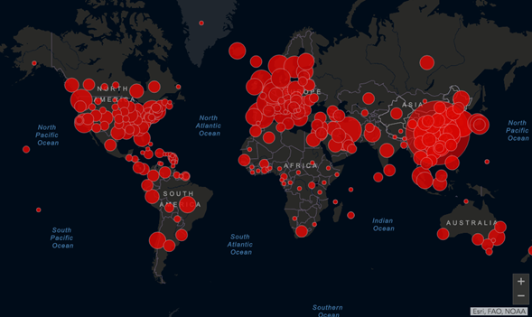

Total de compa�eros de la brigada:
Total de Responsables de Permanencia:
Total de Estudiantes:
Total de CP:
Total de Profes:
Del total de compa�eros de la brigada
Pudimos hablar por reuni�n virtual, por tel�fono o yendo a la casa:
Recibieron paquete de materiales de la semana:
Pudimos juntar vueltos de paquete de materiales:
Contiene los datos anteriores m�s los nuevos datos de compa�eros incorporados.
|
Estudiantes mayores de 60 a�os: |
|
|
Estudiantes menores de 60 a�os: |
|
|
Total de compa�eros de la brigada con menores a cargo: |
|
TRABAJO
|
Compa�eros con trabajo presencial: |
|
|
Compa�eros con teletrabajo/trabajo virtual: |
|
|
Compa�eros haciendo changas: |
|
|
Compa�eros no trabajando por ser poblaci�n de riesgo: |
|
|
Compa�eros suspendidos por pandemia (q su trabajo no es �esencial�): |
|
|
Compa�eros desocupados o con trabajo informal suspendido: |
|
|
De los compa�eros con trabajo presencial: |
|
|
Compa�eros con horario reducido: |
|
|
Compa�eros con horario extendido: |
|
|
De todos, c�mo afecto econom�a del hogar: |
|
|
Compa�eros con disminuci�n del salario: |
|
|
Compa�eros con falta completa de salario por trabajo informal: |
|
SALUD
|
Compa�eros con mayores a cargo: |
|
|
Compa�eros con paciente/s de riesgo en la familia (sin contar mayores): |
|
|
Compa�eros con dificultad para conseguir la medicaci�n (para s� mismos o familiar): |
|
|
Compa�eros realizando alg�n tipo de tratamiento: |
|
|
Compa�eros que asisten a vecinos mayores o pacientes de riesgo del barrio: |
|
|
Compa�eros que reciben ayuda de vecinos del barrio por ser mayores/de riesgo: |
|
FAMILIA
|
Total familiares viven en las casas: |
|
|
Familiares mayores de 60 a�os: |
|
|
Familiares menores de 60 a�os: |
|
|
Total menores (4-16 a�os): |
|
|
Total menores (0-4a�os): |
|
Lo siguiente es una s�ntesis de los planteos que hizo cada uno de los compa�eros en los trabajos escritos, en las charlas telef�nicas, etc. Para leerla y enriquecer nuestra mirada con las opiniones y reflexiones de los dem�s compa�eros, con los que hoy no estamos pudiendo encontrarnos cara a cara, pero est�n haciendo este mismo proceso.
[S�NTESIS ELABORADA POR EL N�CLEO DE BRIGADA]
�Qu� aspectos de lo mencionado m�s arriba te llaman la atenci�n o resalt�s? �Hay alg�n aspecto de tu experiencia que no est� reflejado en la s�ntesis de arriba? �Encontr�s relaci�n con lo que ven�as leyendo, pensando y analizando de la situaci�n en el pa�s y en el mundo?
Escrib� tu an�lisis al respecto
https://www.youtube.com/watch?v=HQqXkTdv0MU
Abren fosas comunes en el mayor cementerio de Amazonas
Los servicios funerarios no dan abasto y los hospitales p�blicos colapsaron. Los sepelios se triplicaron debido a la pandemia: hay cerca de cien por d�a.
Ante el aumento de muertes y casos de coronavirus en el estado de Amazonas, uno de los m�s castigados por la pandemia en Brasil, el mayor cementerio de la ciudad de Manaos se vio obligado a abrir fosas comunes. En la regi�n, los servicios funerarios no dan abasto y los hospitales p�blicos colapsaron debido a la pandemia. Antes de la llegada del coronavirus a la regi�n, la ciudad norte�a de Manaos registraba un promedio de 20 a 35 entierros diarios, pero ahora los sepelios se triplicaron y ya hay cerca de un centenar por d�a, seg�n el alcalde Arthur Neto. Las cifras oficiales hablan de 2.270 casos confirmados y 193 muertes en Amazonas, pero el movimiento en el mayor cementerio de Manaos demuestra que las cifras podr�an ser mucho mayores a las ofrecidas por el gobierno regional.
Precipitado por la crisis sanitaria, el alcalde Arthur Neto se vio forzado a tomar la decisi�n de hacer pozos colectivos en el Cementerio Nossa Senhora de Aparecida de la ciudad de Manaos. All�, los cajones son apilados uno arriba del otro. Desde hace algunos d�as las excavadoras avanzan en el cementerio abriendo trincheras, mientras que en los hospitales de Manaos funcionarios equipados con trajes blancos, m�scaras y guantes trasladan sin pausa los cuerpos sin vida de pacientes infectados de covid-19.
Seg�n pudo constatar la agencia Efe, en apenas una hora al menos cinco cad�veres fueron sacados de los frigor�ficos presentes en las inmediaciones del Joao Lucio, uno de los tres hospitales que dependen del gobierno regional, para ser transferidos al cementerio local. Los frigor�ficos fueron instalados recientemente despu�s de que salieran a la luz im�genes del interior de un hospital local en donde pod�a verse a enfermos de coronavirus siendo atendidos a escasos metros de los cad�veres.
"Es una escena lamentable", se�al� el alcalde de Manaos, quien advirti� que la capital de Amazonas se encuentra en una situaci�n de "calamidad p�blica". Por eso, Arthur Neto pidi� auxilio a los pa�ses europeos para salvar al estado y su "principal patrimonio", la selva amaz�nica, que durante meses estuvo en el centro de la escena debido al preocupante aumento de la deforestaci�n y los incendios .
"Pueden ayudar con recursos, con remesas de medicamentos, env�o de tests r�pidos, equipos de protecci�n, porque muchos m�dicos est�n trabajando sin equipos", destac� Neto. A su juicio, si los habitantes de Amazonas pierden su trabajo "no tendr�n otra alternativa" que explotar los recursos del bosque tropical, como defiende el presidente de Brasil, el ultraderechista Jair Bolsonaro , uno de los m�s esc�pticos respecto a la gravedad de la pandemia.
Con 1,8 millones de habitantes, Manaos concentra cerca de la mitad de la poblaci�n del estado de Amazonas, donde las distancias son continentales y las condiciones en la mayor�a de los municipios precarias, con una casi inexistente infraestructura hospitalaria. "Las ciudades del interior de Amazonas tienen poqu�simas camas para los casos graves. Es un escenario desolador", asegur� Fernando Merloto, fiscal del Ministerio P�blico Federal del estado amaz�nico.
Pese a la dram�tica situaci�n de Amazonas por la pandemia, el "Estado se encuentra extremadamente ausente", denunci� Luigi Fernandes, cuya suegra, de 67 a�os, falleci� hace dos semanas debido al coronavirus. Ester Melo hab�a sido ingresada en un centro m�dico debido a una insuficiencia respiratoria y dio positivo por la covid-19. Durante la semana en la que permaneci� internada, los familiares fueron testigos de una cadena de negligencias.
Seg�n Fernandes, en el lugar solo hab�a un respirador, la m�quina de rayos X no funcionaba, su suegra no fue transferida a una unidad de cuidados intensivos y los propios familiares se vieron obligados a comprar los medicamentos porque no hab�a m�s en el centro m�dico. "Fuimos testigos de la ausencia de Estado, de una falta de organizaci�n total", lament� Fernandes, quien pretende demandar al gobierno del estado de Amazonas por la gesti�n de los hospitales durante la pandemia.
Cuba se escribe con S de solidaridad
Por: Katu Arkonada
Dec�a el Che Guevara que la solidaridad es la
ternura de los pueblos. Esta frase no puede ser m�s cierta en el caso de Cuba, el pueblo
m�s tierno del mundo.
Un pueblo, el cubano, que a�n a pesar de las dificultades por las que atraviesa
una revoluci�n que ya dura 61 a�os, la mayor parte de ellos resistiendo un
criminal bloqueo econ�mico que impide adquirir medicinas, equipamiento e
insumos, tiene en estos momentos 22 brigadas en
21 pa�ses del mundo.
Son 22 brigadas y no 21, porque en Italia se encuentran 2 brigadas de m�dicos cubanos. Una de ellas, la que se encuentra en el norte, en Tur�n, una de las zonas m�s afectadas, vecina de Lombard�a, se llama Humanidad y de ella participa personal de enfermer�a italiano y cubano, y m�dicos con especialidad en epidemiolog�a y experiencia en �frica combatiendo el �bola. Humanidad, linda met�fora de la ternura del pueblo cubano con el pueblo italiano.
Cuba, que asimismo supera los 1.000 contagios y contabiliza alrededor de 50 fallecidos, y tiene 8.2 m�dicos por cada 1.000 habitantes, una de las tasas m�s altas del mundo, ha desplazado 1.238 profesionales de la salud a estos 21 pa�ses del mundo, que van desde Honduras, Nicaragua o Venezuela en Am�rica Latina, a Togo, Angola o Cabo Verde en �frica, pasando por Hait�, Dominicana o Jamaica, en el Caribe.
Pero lo que probablemente mucha gente no sepa es que Cuba lleva 14 a�os trabajando con brigadas m�dicas en China, y ha estado en primera l�nea tambi�n durante el combate al coronavirus en el gigante asi�tico. Lo ha hecho adem�s con un medicamento antiviral, el interfer�n Alfa-2B, elaborado por c�lulas pertenecientes al sistema inmunol�gico de algunos animales vertebrados, medicamento que ha sido determinante para contener la propagaci�n del virus y ayudar a la mejora de miles de personas infectadas por el nuevo coronavirus.
Nada de esto es casualidad, ya Fidel en los 60 comenz� a pensar en un modo de producci�n basada en la ciencia, y esta idea fue acentuada por el bloqueo estadounidense a una isla que no cuenta con los recursos naturales de muchos pa�ses de su entorno, ricos en petr�leo, gas, oro o colt�n, y que incluso su industria tur�stica era limitada por el bloqueo. Es as� que sobre todo en los 90, en pleno periodo especial, despeg� una industria que ha logrado producir la vacuna Pentavalente, que en una sola dosis protege contra la difteria, t�tanos, tosferina, Hepatitis B y la Influenza tipo B, o el CIMAher (nimotuzumab), anticuerpo con el que se tratan tumores avanzados de hasta cinco tipos de c�ncer, entre ellos de cerebro, cabeza y cuello. Tambi�n se hace necesario mencionar aqu� el CIMAvax-EGF, que combate el c�ncer de pulm�n (ning�n pa�s del mundo ha logrado la vacuna), o el Heberprot-P, utilizado en la terapia de la �lcera del pie diab�tico, y que ha reducido en un 75% las amputaciones en este tipo de casos. El Heberprot-P por cierto, est� incluido desde 2018 en el Cat�logo de insumos del ISSSTE.
Este desarrollo m�dico-cient�fico ha permitido que hoy Cuba tenga una tasa de mortalidad infantil de 4�9 por cada 1000 nacidos vivos, y una esperanza de vida que supera los 78�66 a�os, superior a la de Estados Unidos (78�54), y similar a la de cualquier pa�s desarrollado. Todo ello a pesar de ser una isla sin recursos naturales sometida a un bloqueo econ�mico criminal (bloqueo solo apoyado en 2019 en Naciones Unidas por el sionismo israel� y el Brasil de Bolsonaro).
En medio de esta crisis de salud que se suma a la crisis multidimensional que ya viv�amos (econ�mica, financiera, energ�tica, alimentaria�), Cuba sigue siendo un faro de esperanza que nos debe dar luz para pensar este mundo donde se cierran fronteras a las personas y se abren a los capitales, donde la xenofobia impregna nuestras sociedades, donde nos importa m�s el contagio a los mercados que a las personas, y donde la industria farmac�utica es una de las m�s poderosas del mundo. Probablemente una buena met�fora del modo de producci�n capitalista.
Quiz�s en estos tiempos de coronavirus y crisis del capitalismo
nos demos cuenta de la importancia del legado de Fidel Castro y de la
revoluci�n cubana. La tecnolog�a es importante, pero m�s importante a�n es el
ser humano.
Hoy, en un mundo con 820 millones de
hambrientos, 2000 millones de personas desnutridas y 3000 millones q no tienen
c�mo lavarse las manos, Cuba se convierte en un referente de solidaridad frente
a la avaricia de otros pa�ses que piratean tecnolog�a o mascarillas como antes
piratearon a los pueblos, personas y a la naturaleza de los pa�ses del sur.
Es en el mundo de hoy en el que Cuba nunca ha regateado cuando se trata de salvar vidas humanas. De ello pueden dar fe el personal m�dico (m�s de 400.000 personas) que ha desarrollado alguna misi�n en los alrededor de 164 pa�ses con los que Cuba ha sido solidaria.
Es por ello, que si alguien merece el Premio Nobel de la Paz, por encima de quienes apoyan la guerra y sus secuaces en la progres�a neoliberal, son las y los m�dicos cubanos, empe�ados en seguir salvando vidas all� donde el Estado retrocedi� en beneficio de los mercados y en perjuicio de las personas.
Algunos ejes que te pueden ayudar a arrancar con la escritura: �C�mo ves que se expresa la pandemia en nuestra regi�n en particular? (se puede comparar con lo que vemos en el resto del mundo) �Lo que pasa hoy en la regi�n te hace recordar a alguna situaci�n del pasado que hayas vivido o que te hayan contado? �Qu� diferencias ves entre los distintos pa�ses ante la amenaza del coronavirus? �A qu� atribu�s dichas diferencias?
Escrib� tus opiniones, reflexiones, dudas. Las preguntas son una gu�a. No es necesario responder una por una y pod�s agregar otros aspectos que no est�n contemplados en las preguntas o notas.
�Tuviste alg�n problema al completar las preguntas de la historia cl�nica la semana anterior?
�Alguna generaci�n se te hizo m�s dif�cil de indagar? (abuelos, padres o vos) �Por qu�?
�Hay informaci�n que te falte o no sepan en la familia?
�Qu� reflexi�n podes hacer al comparar las distintas generaciones?
�Qu� relaci�n encontr�s entre lo expuesto la semana pasada y la Historia Cl�nica Familiar? �Crees que es necesario tener esa informaci�n para analizar y controlar nuestra salud?
�
Los problemas presentes y nuestras historias no son individuales, somos parte de un entramado colectivo. Para ver la dimensi�n social de las cosas que nos pasan, es importante empezar a compartir nuestras historias, la de nuestras familias, las situaciones que atravesamos hoy. Hoy no podemos hacerlo con unos mates de por medio. Pero leyendo las historias cl�nicas de cada uno de los compa�eros, armamos esta s�ntesis sobre las cuestiones m�s significativas y los puntos que encontramos en com�n:
[CADA BRIGADA COLOCA AC� LA S�NTESIS DE LAS HISTORIAS CL�NICAS DE LOS COMPA�EROS]
�Qu� cosas te llaman la atenci�n de la s�ntesis de las historias cl�nicas? �Por qu�?
Como vimos la semana pasada, nos disponemos a componer nuestra historia cl�nica familiar en 6 ejes. Continuamos el recorrido por los siguientes ejes para el armado de la Historia Cl�nica:
- Ambiente en el que vivimos
- Pr�cticas alimenticias, recreativas, art�sticas y educativas.
Ambiente del barrio
Escrib� un relato que contenga lo siguiente sobre el ambiente barrial:
�C�mo es el espacio f�sico? �Hubo modificaciones desde que viv�s en el barrio? �Cu�les?
�Se realizan actividades al aire libre? �Cu�les? �Qui�nes participan? �D�nde se hacen?
�Hay en el barrio lugares de paseo al aire libre? �C�mo se construyeron?
�Hay alg�n tipo de contaminaci�n? (del aire, del agua, de la tierra, auditiva, olor feo, presencia de basura, etc) �De d�nde proviene esa contaminaci�n? �Siempre estuvo presente?
�Hay presencia de enfermedades comunes en el barrio? �Cu�les?
Vivienda y �mbitos de sociabilidad no laboral
Realiz� una descripci�n detallada de c�mo es tu vivienda y c�mo son los �mbitos de sociabilidad barrial que frecuentes o que hayas frecuentado (club, sociedad de fomento, iglesia, cancha, escuela, etc.). �Segu�s frecuentando alguno de esos espacios? Si ya no los frecuent�s, �en qu� momento dejaste de hacerlo y por qu�? �C�mo son las relaciones en esos �mbitos de sociabilidad barrial?
Pr�cticas saludables
�C�mo se suele componer tu dieta? �Cu�ntas veces a la semana com�s l�cteos? �Carne? �Y verduras? �Qu� verduras consum�s con mayor regularidad?
�Encontr�s diferencias entre tu dieta regular ahora y tu dieta durante tu ni�ez?
�Y con la forma en la que se alimentaban tus padres? �Cu�les?
�De d�nde obten�an los alimentos tus padres? �Y tus abuelos? �Vos c�mo soles obtener tus alimentos?
�Hay alguna receta que cocinaran tus abuelos o tus padres que vos tambi�n sepas hacer? �Hay alguna receta que ellos hac�an y que vos no hagas?
Si ten�s hijos �Suelen comer verduras? �Qu� alimentos consumen con mayor regularidad? �Encontr�s diferencia con la forma en la que te alimentabas vos de chico?
�Tom�s agua con frecuencia? �Cu�nto beb�s aproximadamente por d�a?
�Cu�ntas horas dorm�s por d�a?
�Realiz�s actividad f�sica con frecuencia? No necesariamente debe ser un deporte, se puede contemplar en los ritmos de tu trabajo, caminatas regulares para ir al trabajo, llevar a los chicos al colegio, etc.
�C�mo sol�s despejarte despu�s de un d�a largo?
�Realiz�s alguna actividad recreativa con frecuencia? �Cu�l? (ej, ir a la plaza a tomar mates, ir al r�o a pasar el d�a, etc.)

Mapa sobre el crecimiento del COVID-19 a nivel mundial, actualizado al 02/05/2020. Mapa elaborado por la Universidad Johns Hopkins. (https://as.com/diarioas/2020/03/17/actualidad/1584427134_983250.amp.html)
https://www.youtube.com/watch?v=lmIkb2B6tcg
M�dicos chinos realizan jornada casa por casa en Caracas
El Plan de Despistaje Ampliado Personalizado prev� detectar casos de Covid-19 de forma temprana.
Como parte de la cooperaci�n t�cnica que brinda China al Gobierno venezolano, este mi�rcoles, expertos chinos se desplegaron en una visita casa por casa en el sector Los Jardines de El Valle, en Caracas.
Junto al personal m�dico chino, estuvieron las autoridades sanitarias del Centro de Diagn�stico Integral (CDI) Dr. Alcides Rodr�guez y m�dicos cubanos en el marco del Plan de Despistaje Ampliado Personalizado casa por casa que impulsa el Gobierno nacional.
De esta manera, en el pa�s suramericano utiliza la metodolog�a de pesquisa como una de las medidas preventivas en la lucha contra el nuevo coronavirus en Venezuela.
A trav�s de la encuesta electr�nica que m�s de 16 millones de venezolanos han respondido en el Sistema Patria, el personal m�dico realiza una hoja de ruta de los posibles casos.
El personal de salud chino destaca que aunque en China no van casa por casa, s� aplican las pesquisas colectivas. Los chequeos en los puntos de control son obligatorios para los ciudadanos chinos: all� se les mide la temperatura y monitorean cada caso dentro de una comunidad.
Sin embargo, los m�dicos asi�ticos constataron que si bien es cierto que en las pesquisas casa por casa el personal de salud trabaja m�s, la metodolog�a constituye una herramienta para la prevenci�n temprana y alerta de los posibles casos.
Es importante destacar, que el Centro de Diagn�stico Integral (CDI) Dr. Alcides Rodr�guez es uno los centros centinelas dispuestos para la atenci�n de casos de Covid-19 en Caracas. Y desde su inauguraci�n, en 2018, atiende en su mayor�a a los habitantes de las parroquias Coche y El Valle.